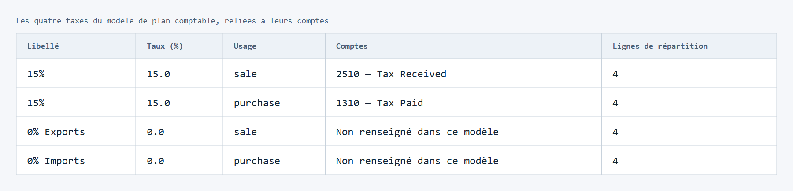

01 · Gestion / ERPOdoo · XML + CSV

Odoo : rendre un référentiel comptable lisible
Réunir comptes, taxes et objets de configuration ; retrouver les sources et les relations utiles.
Résultat mesuré15 fichiers → 118 enregistrements
Examiner le cas et les livrables →